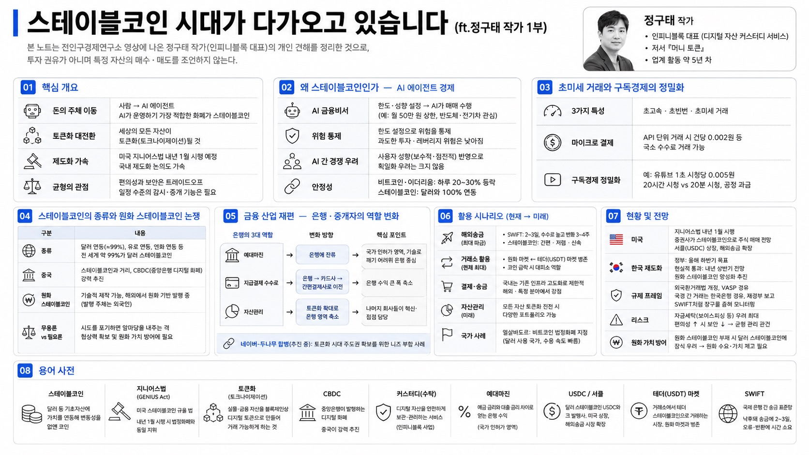

전인구경제연구소MORNING DIGEST · 2026-08-04 · 전인구경제연구소🎬 영상
스테이블코인 시대가 다가오고 있습니다(ft.정구태 작가 1부)
본 노트는 전인구경제연구소 영상에 나온 정구태 작가(인피니블록 대표)의 개인 견해를 정리한 것으로, 투자 권유가 아니며 특정 자산의 매수·매도를 조언하지 않는다.

01핵심 개요
출연자: 정구태 작가. 디지털 자산 커스터디(수탁) 서비스를 개발·운영하는 인피니블록 대표. 저서 『머니 토큰』. 업계 활동 약 5년 차.
핵심 주장: 돈을 쓰는 주체가 사람에서 AI로 이동하며, AI가 운영하기에 가장 적합한 화폐가 스테이블코인이라는 관점. 세상의 모든 자산이 토큰화(토크나이제이션)될 것이라고 전망.
시점 배경: 미국 지니어스법(GENIUS Act)이 내년 1월 시행 예정으로, 시행 시 스테이블코인이 법정화폐와 동일한 지위를 가짐. 이에 맞춰 국내 제도화 논의도 가속.
균형 관점: 편의성과 보안은 트레이드오프이며, 완전한 탈중앙화는 이상적이라고 보고 일정 수준의 감시·중개 기능은 필요하다는 입장.
02왜 스테이블코인인가 — AI 에이전트 경제와의 결합
화폐는 사람이 사람 중심으로 만든 것. 앞으로 로봇·AI 에이전트 등이 등장하면 기계가 운영할 수 있는 돈이 필요하며, 현재 그 후보 중 가장 적합한 것이 스테이블코인.
AI 금융비서 예시: "월 50만 원 상한, 반도체·전기차 관심"처럼 한도와 성향을 지정하면 AI가 매매 수행. 한도 설정으로 위험을 감내할 수준으로 통제 가능. 과도한 투자·레버리지만 사람이 주도권을 갖고 통제하면 위험성이 낮아진다는 논리.
AI 간 경쟁 우려에 대해: 사람마다 특성이 다르듯 AI도 각자 사용자의 보수적·점진적 성향을 반영하므로 획일화 우려는 크지 않다고 봄.
안정성 근거: 비트코인·이더리움은 하루 20~30%까지 등락해 화폐로 쓰기 어려웠으나, 스테이블코인은 달러와 100% 연동해 달러 가격을 추종하도록 만들어 변동성을 없앤 것.
03초미세 거래와 구독경제의 정밀화
세 가지 특성: 초고속·초빈번·초미세 거래. 사람이 클릭으로 결제하던 방식에서 AI 에이전트가 수행하는 방식으로 전환.
마이크로 결제 예시: API 단위 주식 거래 시 건당 0.002원 같은 극소 수수료 거래가 가능. 기존 화폐 단위로는 수행이 어렵지만 에이전트 결제로는 가능.
구독경제 정밀화: 유튜브 월 2~3만 원 정액제 대신, 1초 시청당 0.005원 식의 초 단위 과금으로 세분화. 20시간 보는 사람과 20분 보는 사람이 다르게 내는 공정한 과금 체계.
04스테이블코인의 종류와 원화 스테이블코인 논쟁
기초자산에 따라 종류 구분: 달러 연동, 유로 연동, 엔화 연동 스테이블코인이 존재. 현실적으로 전 세계 약 99%가 달러 스테이블코인으로, 달러의 범용성·영향력을 반영.
중국은 스테이블코인과는 거리를 두고 CBDC(중앙은행 발행 디지털 화폐)를 더 강력하게 추진.
원화 스테이블코인은 기술적으로 제작 가능하나, 이미 해외에서 원화를 기초자산으로 토큰화한 스테이블코인이 발행됨. 발행 주체가 한국인이 아닌 외국인이라는 점을 아쉬운 대목으로 언급. 하이닉스 주식 일부(약 3~5%)를 미국에 상장한 것에 비유.
해외 탈중앙화 거래소에서 삼성전자·현대차·하이닉스 등 국내 주식도 토큰화되어 거래 중. 한국이 막기 어려울 만큼 시장이 이미 움직이고 있음.
무용론 vs 필요론: 99%가 달러 스테이블코인이라 원화 무용론도 있으나, 시도조차 안 하면 앞마당을 내주는 격. 원화 스테이블코인이 있어야 달러 스테이블코인에 대한 협상력과 원화 가치 방어가 가능하다는 대응적 논리.
05금융 산업 재편 — 은행·중개자의 역할 변화
은행의 3대 역할: ①예대마진 ②지급결제 수수료 ③자산관리.
지급결제는 은행→카드사→간편결제사(네이버·카카오·토스)로 이전되며 은행 수익이 크게 축소. 자산관리도 토큰화 상품 확대로 은행 영역이 점차 축소 전망.
예대마진은 예금·대출이 국가 인허가 영역이라 기술로 깨기 어려워 은행에 남고, 은행은 이 분야에 더 집중하고 나머지 회사들이 혁신·접점을 담당하는 구도.
네이버-두나무 합병(추진 중, 미완료): 두나무는 코인 거래를 실물시장으로, 네이버는 실물 상거래를 토큰화로 주도권을 가져가려는 니즈가 상호 부합한 사례. 토큰화라는 큰 흐름의 일환.
탈중앙화·중개자 논쟁: P2P 거래는 중개자를 빼 비용을 낮추지만, 관리·감독자가 없으면 악의적 행위를 제어할 수 없음. 완전한 탈중앙화도 정답이 아니며, 과도기적으로 감시망과 중개인이 필요.
06활용 시나리오
결제·송금이 가장 강력한 용도. 다만 국내 지급결제는 카드·간편결제로 이미 고도화돼 스테이블코인의 특장점을 끌어내기 어려움.
해외송금이 최대 파급 분야: 기존 SWIFT망 기반 송금은 상대 은행 정보를 정확히 알아야 하고, 잘못 보내면 반환에 3~4주, 정상 송금도 2~3일(주말 끼면 더), 수수료도 높음. 스테이블코인 송금은 훨씬 간편·저렴·신속.
무역업체들은 정부 명확한 가이드가 없는 상태에서도 국세청 신고·세금 납부를 하며 이미 상당수가 스테이블코인을 무역거래에 활용 중.
거래소 내 활용이 현재 가장 많음: 원화 마켓과 테더(USDT) 마켓이 있으며, 스테이블코인은 원래 거래소 안에서 편하게 쓰고(법정화폐↔코인 환전 번거로움 해소) 코인 급락 시 대피소 역할을 하려고 만들어짐.
개인도 거래소에서 스테이블코인 취득 후 해외 송금·결제 가능. 자산관리(포트폴리오)는 모든 자산의 토큰화가 진전되면 다양해질 영역으로, 지금은 다소 먼 얘기.
국가 사례: 엘살바도르는 비트코인을 법정화폐로 지정(모든 상점 수취 의무, 월급·공과금 지불 가능). 자국 화폐 없이 달러를 쓰던 배경. 달러를 자국화폐로 쓰는 국가들은 스테이블코인 수용 속도가 빠를 가능성이 큼.
07현황 및 전망
미국: 지니어스법 내년 1월 시행 시 스테이블코인이 법정화폐 지위 획득. 증권사(로빈후드 등)가 달러 스테이블코인으로 주식을 사게 할 것으로 전망. 서클(Circle, USDC 발행사)은 미국 상장, 해외송금 시장으로 확장 중.
한국 제도화: 디지털자산법에 스테이블코인까지 함께 규율해 덩어리가 커 지연되는 측면. 정부안 목표는 올해 하반기, 현실적 통과는 내년 상반기로 산업계 전망. 재작년까지 우울했으나 트럼프 정부 출범 후 분위기 전환, 국회의 제도화 의지가 강함. 청와대 경제성장 전략, 재경부 주도 '원화 국제화 로드맵'에도 원화 스테이블코인 양성화가 포함.
규제 프레임: 외국환거래법 개정으로 해외 스테이블코인 거래는 가상자산사업자(VASP)를 통하도록 하고, 인피니블록 등도 하반기 12월부터 수행. 국경 간 스테이블코인은 한국은행 경유해 재경부 보고. SWIFT처럼 특정 라이선스 업체로 창구를 좁혀 모니터링하는 구도.
리스크: 정부의 최대 우려는 자금세탁(보이스피싱 등 불법자금 세탁). 금융회사는 노하우·시스템으로 99%를 걸러내나, 가상자산 쪽은 노하우가 부족해 취약. 편의성↑ 시 보안↓의 트레이드오프 균형 관리가 관건.
원화 가치 방어: 수출 호조에도 원화 가치 하락이 지속되는 상황에서, 원화 스테이블코인을 만들지 않으면 달러 스테이블코인에 상당 부분 잠식될 것이라는 우려. 원화 수요와 가치를 끌어올리기 위한 상용화 필요성 강조.
08용어 사전
용어
설명
스테이블코인
달러 등 기초자산에 가치를 연동해 변동성을 없앤 코인. 전 세계 약 99%가 달러 연동
지니어스법(GENIUS Act)
미국 스테이블코인 규율 법. 내년 1월 시행 시 스테이블코인이 법정화폐와 동일 지위
토큰화(토크나이제이션)
실물·금융 자산을 블록체인상 디지털 토큰으로 만들어 거래 가능하게 하는 것
CBDC
중앙은행이 발행하는 디지털 화폐. 중국이 스테이블코인 대신 강력 추진
커스터디(수탁)
디지털 자산을 안전하게 보관·관리하는 서비스. 정구태 대표의 인피니블록 사업
예대마진
예금 금리와 대출 금리 차이로 얻는 은행 수익. 국가 인허가 영역
USDC / 서클(Circle)
달러 스테이블코인 USDC와 그 발행사. 미국 상장, 해외송금 시장 확장
테더(USDT) 마켓
거래소에서 테더 스테이블코인으로 거래하는 시장. 원화 마켓과 병존
SWIFT
국제 은행 간 송금 표준망. 낙후돼 송금에 2~3일, 오류 시 3~4주 소요
가상자산사업자(VASP)
가상자산 취급 라이선스 보유 업체. 해외 스테이블코인 거래 창구로 지정
외국환거래법
국경 간 자금 이동을 규율하는 법. 개정으로 스테이블코인 거래를 VASP 경유·재경부 보고